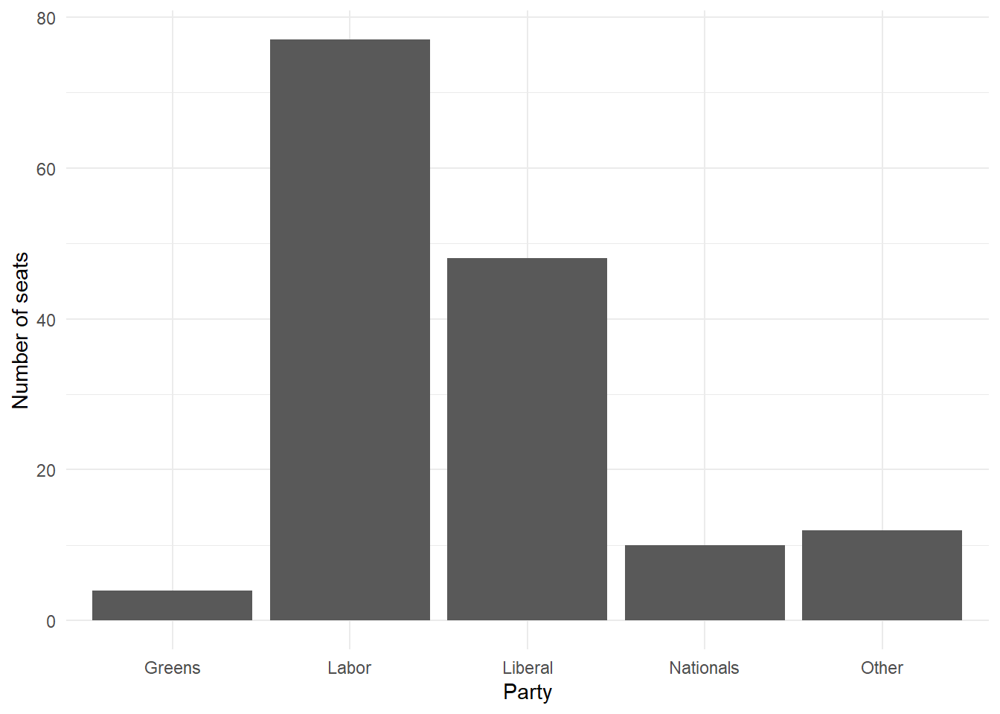

#### Preamble #Exploring the 2022 Australian Election
# Purpose: Read in dCan from the 2022 Australian Election and make
# a graph of the number of seats each party won.
# Author: Rohan Alexander
# Email: rohan.alexander@utoronto.ca
# Date: 1 January 2023
# Prerequisites: Know where to get Australian elections data.
#### Workspace setup ####
# install.packages("tidyverse")
# install.packages("janitor")
library(tidyverse)Warning: package 'tidyverse' was built under R version 4.3.2Warning: package 'ggplot2' was built under R version 4.3.2Warning: package 'tibble' was built under R version 4.3.2Warning: package 'tidyr' was built under R version 4.3.2Warning: package 'readr' was built under R version 4.3.2Warning: package 'purrr' was built under R version 4.3.2Warning: package 'dplyr' was built under R version 4.3.2Warning: package 'stringr' was built under R version 4.3.2Warning: package 'forcats' was built under R version 4.3.2Warning: package 'lubridate' was built under R version 4.3.2── Attaching core tidyverse packages ──────────────────────── tidyverse 2.0.0 ──
✔ dplyr 1.1.4 ✔ readr 2.1.4
✔ forcats 1.0.0 ✔ stringr 1.5.1
✔ ggplot2 3.4.4 ✔ tibble 3.2.1
✔ lubridate 1.9.3 ✔ tidyr 1.3.0
✔ purrr 1.0.2
── Conflicts ────────────────────────────────────────── tidyverse_conflicts() ──
✖ dplyr::filter() masks stats::filter()
✖ dplyr::lag() masks stats::lag()
ℹ Use the conflicted package (<http://conflicted.r-lib.org/>) to force all conflicts to become errorslibrary(janitor)Warning: package 'janitor' was built under R version 4.3.2
Attaching package: 'janitor'
The following objects are masked from 'package:stats':
chisq.test, fisher.testsimulated_data <-
tibble(
# Use 1 through to 151 to represent each division
"Division" = 1:151,
# Randomly pick an option, with replacement, 151 times
"Party" = sample(
x = c("Liberal", "Labor", "National", "Green", "Other"),
size = 151,
replace = TRUE
)
)
simulated_data# A tibble: 151 × 2
Division Party
<int> <chr>
1 1 Other
2 2 National
3 3 Liberal
4 4 Green
5 5 Green
6 6 Green
7 7 Labor
8 8 Labor
9 9 Other
10 10 Other
# ℹ 141 more rows#### Read in the data ####
raw_elections_data <-
read_csv(
file = "https://results.aec.gov.au/27966/website/Downloads/HouseMembersElectedDownload-27966.csv",
show_col_types = FALSE,
skip = 1
)
# We have read the data from the AEC website. We may like to save
# it in case something happens or they move it.
write_csv(
x = raw_elections_data,
file = "australian_voting.csv"
)
head(raw_elections_data) #show the first six rows# A tibble: 6 × 8
DivisionID DivisionNm StateAb CandidateID GivenNm Surname PartyNm PartyAb
<dbl> <chr> <chr> <dbl> <chr> <chr> <chr> <chr>
1 179 Adelaide SA 36973 Steve GEORGANAS Austral… ALP
2 197 Aston VIC 36704 Alan TUDGE Liberal LP
3 198 Ballarat VIC 36409 Catherine KING Austral… ALP
4 103 Banks NSW 37018 David COLEMAN Liberal LP
5 180 Barker SA 37083 Tony PASIN Liberal LP
6 104 Barton NSW 36820 Linda BURNEY Austral… ALP tail(raw_elections_data) #show the last six rows# A tibble: 6 × 8
DivisionID DivisionNm StateAb CandidateID GivenNm Surname PartyNm PartyAb
<dbl> <chr> <chr> <dbl> <chr> <chr> <chr> <chr>
1 152 Wentworth NSW 37451 Allegra SPENDER Indepen… IND
2 153 Werriwa NSW 36810 Anne Maree STANLEY Austral… ALP
3 150 Whitlam NSW 36811 Stephen JONES Austral… ALP
4 178 Wide Bay QLD 37506 Llew O'BRIEN Liberal… LNP
5 234 Wills VIC 36452 Peter KHALIL Austral… ALP
6 316 Wright QLD 37500 Scott BUCHHOLZ Liberal… LNP #### Basic cleaning ####
raw_elections_data <-
read_csv(
file = "australian_voting.csv",
show_col_types = FALSE
)
# Make the names easier to type
cleaned_elections_data <-
clean_names(raw_elections_data)
# Have a look at the first six rows
head(cleaned_elections_data)# A tibble: 6 × 8
division_id division_nm state_ab candidate_id given_nm surname party_nm
<dbl> <chr> <chr> <dbl> <chr> <chr> <chr>
1 179 Adelaide SA 36973 Steve GEORGANAS Australian …
2 197 Aston VIC 36704 Alan TUDGE Liberal
3 198 Ballarat VIC 36409 Catherine KING Australian …
4 103 Banks NSW 37018 David COLEMAN Liberal
5 180 Barker SA 37083 Tony PASIN Liberal
6 104 Barton NSW 36820 Linda BURNEY Australian …
# ℹ 1 more variable: party_ab <chr>cleaned_elections_data <-
cleaned_elections_data |>
select(
division_nm,
party_nm
)
head(cleaned_elections_data)# A tibble: 6 × 2
division_nm party_nm
<chr> <chr>
1 Adelaide Australian Labor Party
2 Aston Liberal
3 Ballarat Australian Labor Party
4 Banks Liberal
5 Barker Liberal
6 Barton Australian Labor Partynames(cleaned_elections_data)[1] "division_nm" "party_nm" cleaned_elections_data <-
cleaned_elections_data |>
rename(
division = division_nm,
elected_party = party_nm
)
head(cleaned_elections_data)# A tibble: 6 × 2
division elected_party
<chr> <chr>
1 Adelaide Australian Labor Party
2 Aston Liberal
3 Ballarat Australian Labor Party
4 Banks Liberal
5 Barker Liberal
6 Barton Australian Labor Partycleaned_elections_data$elected_party |>
unique()[1] "Australian Labor Party"
[2] "Liberal"
[3] "Liberal National Party of Queensland"
[4] "The Greens"
[5] "The Nationals"
[6] "Independent"
[7] "Katter's Australian Party (KAP)"
[8] "Centre Alliance" #Simplify the party names to match the simulated data
cleaned_elections_data <-
cleaned_elections_data |>
mutate(
elected_party =
case_match(
elected_party,
"Australian Labor Party" ~ "Labor",
"Liberal National Party of Queensland" ~ "Liberal",
"Liberal" ~ "Liberal",
"The Nationals" ~ "Nationals",
"The Greens" ~ "Greens",
"Independent" ~ "Other",
"Katter's Australian Party (KAP)" ~ "Other",
"Centre Alliance" ~ "Other"
)
)
head(cleaned_elections_data)# A tibble: 6 × 2
division elected_party
<chr> <chr>
1 Adelaide Labor
2 Aston Liberal
3 Ballarat Labor
4 Banks Liberal
5 Barker Liberal
6 Barton Labor #save the cleaned data
write_csv(
x = cleaned_elections_data,
file = "cleaned_elections_data.csv"
)#EXPLORING THE DATA#### Read in the data ####
cleaned_elections_data <-
read_csv(
file = "cleaned_elections_data.csv",
show_col_types = FALSE
)
#Seats each party Won
cleaned_elections_data |>
count(elected_party)# A tibble: 5 × 2
elected_party n
<chr> <int>
1 Greens 4
2 Labor 77
3 Liberal 48
4 Nationals 10
5 Other 12#Build a graph of the previous table using ggplot2
#default
cleaned_elections_data |>
ggplot(aes(x = elected_party)) + # aes abbreviates "aesthetics"
geom_bar()
#white bckgnd, labels
cleaned_elections_data |>
ggplot(aes(x = elected_party)) +
geom_bar() +
theme_minimal() + # Make the theme neater
labs(x = "Party", y = "Number of seats") # Make labels more meaningful